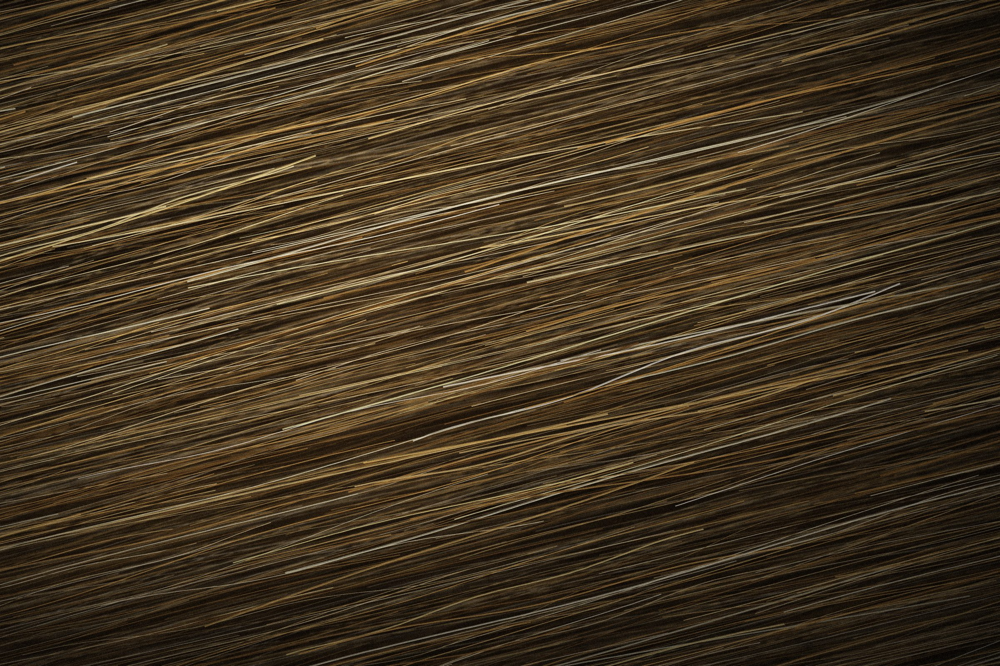
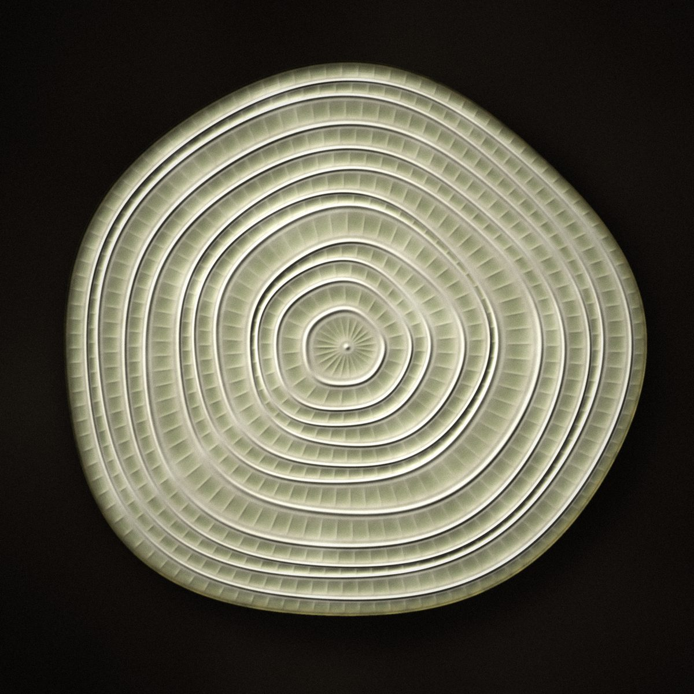
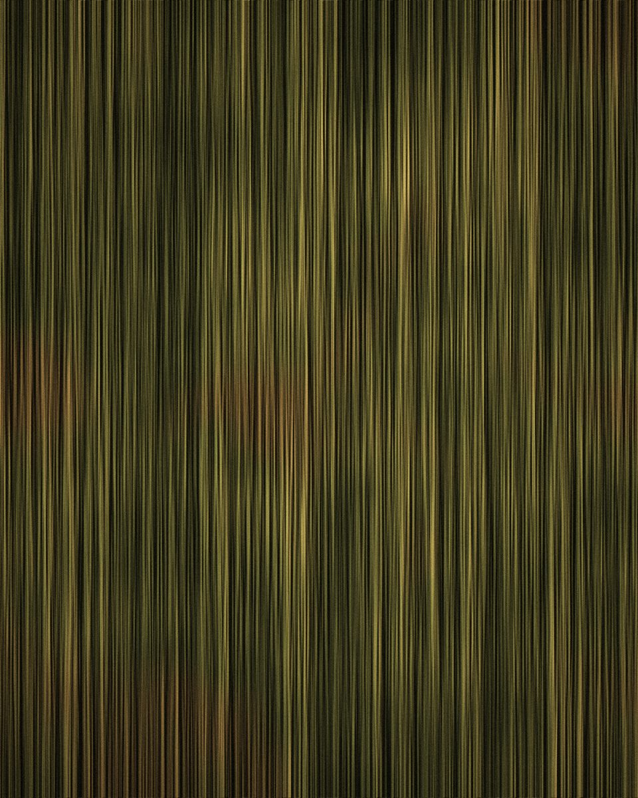
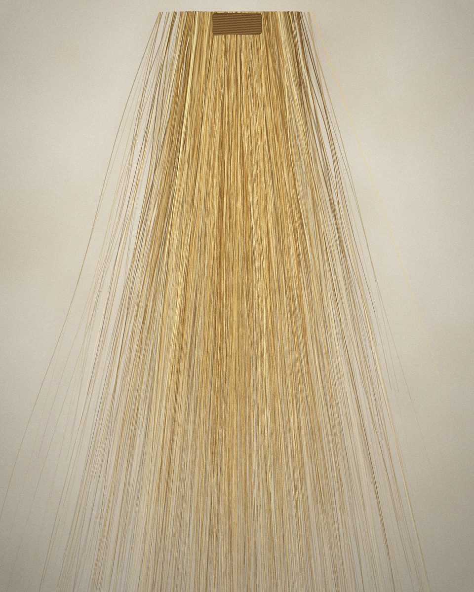

Banana-fibre materials · Kigali, Rwanda
After the harvest, a material.
RE-BANATEX turns the banana stems Rwanda discards after harvest into fibre, yarn, woven fabric and alternative leather — and works with brands, designers and manufacturers to make them into products.
Overall winner, Hanga Pitchfest 2025

01 Stem
A banana plant fruits once. Then its stem is cut down — and, until now, left to rot or burned.

3M+ tonnes a year
Rwanda grows bananas on a scale few countries match. RE-BANATEX estimates that more than three million tonnes of banana trunks are discarded or burned in the country every year.
That residue is our raw material. We buy stems and leaves directly from farmers after the bunch has been harvested, so the same crop pays twice.


02 Fibre
Inside every stem, a long natural fibre.
The fibre was always there. Getting it out cleanly, at a useful volume, was the problem. RE-BANATEX founder Jonathan Shauri, a mechanical engineer, designed the company’s first fibre extraction machine — and the machines have been developed in-house since.
What comes out is a plant fibre that can be spun on its own or blended with cotton, woven into cloth, or pressed into an alternative to leather. Biodegradable at the end of its life, and grown in Rwanda.
03 Material
The material file.
Five forms, one fibre. Everything RE-BANATEX supplies starts as the same extracted banana fibre.
Specification — RE-BANATEX banana fibre
- Source
- Banana pseudostems and leaves, collected after the fruit harvest
- Origin
- Rwanda — bought directly from local farmers
- Extraction
- Mechanical, on extraction machines designed and built by RE-BANATEX
- Processing
- Extracted, treated, spun and woven in Rwanda, on handlooms and specialised machines
- Blends
- 100% banana fibre, or blended with cotton
- End of life
- Biodegradable
- Footprint
- 65% more sustainable than cotton †
- Cost
- 42.3% below comparable products on the Rwandan market †
- Technical data
- Weights, widths and test data are shared with trade enquiries. Request the current spec with a sample →
† Figures as stated by RE-BANATEX.
04 Process
Six steps from stem to product.
Every step happens in Rwanda, on equipment and skills RE-BANATEX has built up since 2022.
-
01
Stem
Once the bunch is cut, farmers sell us the stems and leaves left standing in the field — a residue that would otherwise rot or be burned.
-
02
Extraction
Stems go through extraction machines designed and built by RE-BANATEX, which separate the long fibres from the rest of the stem.
-
03
Treatment
The raw fibre is cleaned and treated so it can be spun consistently — the step that turns a by-product into a raw material.
-
04
Spinning
Fibre becomes yarn: pure banana, or blended with cotton for a softer, more durable thread.
-
05
Weaving
On handlooms and specialised machines, yarn becomes cloth — the base for fabric, rugs and finished goods.
-
06
Product
Bags, backpacks, shoes, garments, rugs and hair extensions — made by RE-BANATEX, or developed with partners from the same material.
05 Applications
One fibre, five industries — and the one you bring.
06 Products
Products as proof.
RE-BANATEX makes its own range in Rwanda — not to be a fashion label, but to show what the material can carry. Each piece is a working test of strength, finish and wear.

- 01Laptop bagWoven fibre
- 02Carry bagWoven fibre
- 03BackpackWoven fibre
- 04Men’s shoeFibre & alt. leather
- 05Fabric by the cut1 m × 50 cm
- 06YarnSpun fibre
- 07RugsCoarse weave
- 08Hair extensionsFine fibre
- 09Vegan leatherBanana-based
07 Origin
Rooted in Rwanda. Built for wider markets.

RE-BANATEX is built as a chain, not a workshop. It connects people who rarely meet:
- A Farmers supply the stems
- B Engineers build the machines
- C Makers spin, weave and finish
- D Designers turn material into product

“The reason why RE-BANATEX is implementing this project is to see how we can support the ‘Made in Rwanda’ movement with locally available material.”
Milestones
The idea launches: textiles from the banana stems Rwanda throws away.
Design and manufacture of the first fibre extraction machines begins.
Fibre, yarn, woven fabric, alternative leather and a range of finished products, made in Rwanda.
Overall winner of Hanga Pitchfest 2025 — Rwanda’s national innovation competition — and its Rwf 50 million prize.
Opening the material to brands, manufacturers and research partners beyond Rwanda.
08 Impact
What changes when a stem has a price.
- 3M+
- tonnes of banana trunks discarded or burned in Rwanda each year — the resource we work from.†
- 65%
- more sustainable than cotton, by RE-BANATEX’s assessment of its fabric.†
- 42.3%
- lower cost than comparable products on the Rwandan market.†
† Figures as stated by RE-BANATEX.
For farmers
A second income from the same harvest. Stems and leaves that once had to be cleared away are now sold.
For young people
Skilled work in extraction, spinning, weaving and making — combining traditional craft with machines built locally.
For the market
A local, biodegradable alternative to the imported synthetic textiles that dominate the market today.
09 Partners
Work with the material.
For brands, manufacturers, designers, architects, researchers, product developers, sustainability teams and innovation partners looking for a plant-based material with a real supply chain behind it.
- 01 Source the material Fibre, yarn and woven fabric for your own production.
- 02 Develop a product Co-develop a product in banana fibre with our team, from first sample onwards.
- 03 Explore a custom application Test the fibre in a format we don’t make yet.
- 04 Partner on innovation Research, pilots and the scale-up of extraction and processing.
Request a sample, or start a conversation.
Tell us what you make and what you need the material to do. A member of the team will reply personally.
- Kigali, Rwanda
- rebanatex.rw
- Instagram @rebanatex
- X @rebanatex